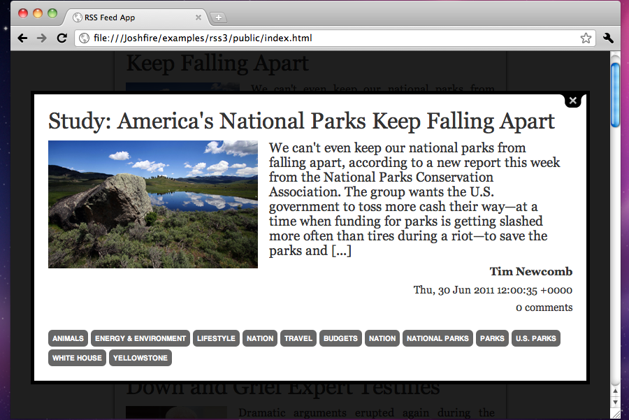

At this point, our application is able to fetch data from a RSS feed and display it in browsers.
But the UI is still pretty basic, so we are going to extend it and add a few interactions.
tree.data.jsNo changes are required: the data we use will be the same and it is already fetched in a portable way. Enjoy!
tree.ui.jsWe are going to improve the UI by adding a new component. This will also show you how UI Elements can easily be bound and interact together.
Joshfire.define(['joshfire/class', 'joshfire/tree.ui', 'joshfire/uielements/list', 'joshfire/uielements/panel'],
function(Class, UITree, List, Panel) {
return Class(UITree, {
buildTree: function() {
// Declare UI Elements
return [
// The List UI Element we already used
{
id: 'newsList',
type: List,
orientation: 'left',
dataPath: '/news/',
noMouseAutoFocus: true, // deactivate focus on mouse hover
moveOnFocus: true, // keep focused element on display
itemInnerTemplate:
'<div class="clearfix">'+
' <h1 class="title"><%= item.title %></h1>'+
' <img src="<%= item.image %>" />'+
' <div class="description"><%= item.description %></div>'+
'</div>',
loadingTemplate: null // override default template used during data loading
},
// We create a Panel UI Element : this is a simple block which aims to display content
{
id: 'newsInfo', // internal id
type: Panel, // type of UI widget : a Panel
uiDataMaster: '/newsList', // bind this element to listen change on its master (parent)
autoShow: false, // hide the element (UI Element are displayed by default)
showOnFocus: false, // disable auto-show on focus as it is not always the desired behaviour
forceDataPathRefresh: true, // fire a refresh event event if dataPath was not changed
innerTemplate: // override default template for the element
'<div class="info">'+
' <p class="title"><%= data.title %></p>'+
' <div class="clearfix">'+
' <img src="<%= data.image %>" />'+
' <p class="description"><%= data.description %></p>'+
' <p class="author"><%= data.creator %></p>'+
' <p class="date"><%= data.pubDate %></p>'+
' <p class="comments"><%= data.commentsCount %> comments</p>'+
' </div>'+
' <div class="clearfix">'+
' <ul class="category clearfix">'+
' <% for (name in data.category) { %> <li><%= data.category[name] %></li> <% }; %>'+
' </ul>'+
' </div>'+
'</div>',
loadingTemplate: null // override default template used during data loading
}
];
}
});
});
The important new thing in the code above is the uiDataMaster property: it binds a UI element to a master one.
When an item is selected in the master UI Element, the dataPath of the slave Element is updated. When this happens, its content is reloaded accordingly to the new dataPath.
app.jsWe are going to add some interactions to the UI.
Joshfire.define(['joshfire/app', 'joshfire/class', './tree.data', './tree.ui',
'joshfire/utils/splashscreen', 'joshfire/vendor/jquery'],
function(BaseApp, Class, Data, UI, SC, $) {
Joshfire.debug = true;
return Class(BaseApp, {
id: 'exampleRss',
uiClass: UI,
dataClass: Data,
setup: function(callback) {
var self = this;
// Basic util allowing us to display / hide a splashcreen
var splashscreen = new SC();
// We subscribe to 'data' event to remove the slpashscreen when data is loaded
self.ui.element('/newsList').subscribe('data', function(ev) {
splashscreen.remove();
});
// When data is loaded, give focus to '/newsList/'
self.ui.element('/newsList').subscribe('data', function(ev) {
self.ui.moveTo('focus', '/newsList');
});
// Load a jQuery plugin which displays boxes
Joshfire.require(['public/js/jquery.colorbox-min'], function() {
// When '/newsInfo' dataRoot is changed (it does when selections occurs on '/newsList') ...
self.ui.element('/newsInfo').subscribe('afterRefresh', function(ev, id) {
// ... give focus to '/newsInfo' ...
self.ui.moveTo('focus', '/newsInfo');
// ... display '/newsInfo' inside a styled box thanks to colorbox plugin !
$.colorbox({width:'800px', inline:true, href:'#'+ self.ui.element('/newsInfo').htmlId +' .info',
// When user close the box ...
onCleanup: function() {
// ... give focus back to '/newsList' !
self.ui.moveTo('focus', '/newsList');
}
});
});
});
callback(null, true);
}
});
});
index.htmlThis is where we move the content of the previous index.html file.
We only added a stylesheet from jQuery Colorbox plugin and added a splashscreen div.
<!DOCTYPE html>
<html>
<head>
<title>RSS Feed App</title>
<link rel="stylesheet" href="css/app.css" />
<link rel="stylesheet" href="css/colorbox.css" />
<script data-main="../" src="../joshfire/adapters/browser/bootstrap.js"></script>
</head>
<body>
<script>
Joshfire.debug = true;
Joshfire.require(['src/app'], function(App) {
console.log('Code is loaded!');
new App();
});
</script>
<div id="splashscreen">RSS Feed Example</div>
</body>
</html>
Colorbox dependencies:
public/js/jquery.colorbox-min.jspublic/css/colorbox.csspublic/img/controls.pngpublic/img/loading.gifRun it!You can now launch the application in your browser, and when you click on an item in the list, it should look like this:
{kind=link}
{kind=link}